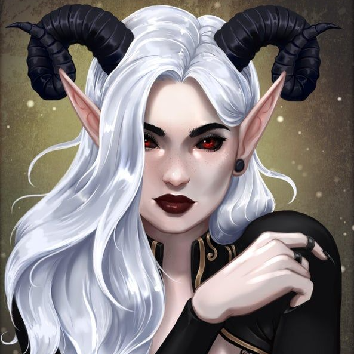

Mirabela
-
Part succubus. Claims to want to be a mother figure to us but there's a lot of contention to that. She is very helpful though. She was apparently Petruzzo's... GF? She leads The Followers of the lunar eclipse which Srebash is apart of.
-
As a witch, Mirabel focuses on curses.
-
Being a powerful witch, Mirabel has helped us with suplies and information throughout our journeys in the Merky Den.
DM Stories
It was a dark night. Dark, yet clear. The moon was clear and bright in the sky above, and through the wood, a young girl of pale complexion and infernal blood was running for her life. She just finished 16 winters and now the only thing on her mind was that she may not experience the 17th one. Running and running through the dense foliage of the dark woods, her long, beautiful dress was cut by branches and muddied from every fall. Yet, she needed to run. Her life depended on that. It was a story as old as there were daughters of dukes. An assassination? Maybe. An abduction? Possible. Some religious purists wanting to rid this world from the infernal taint? Well, that’s a very personal kind of problem. Even though she tried to hide it with luxurious hairstyling and expensive accessories, you can only do so much with those horns and long ears. Still, that dint matter now. Now, she needed to run. Whoever was hunting her was close.
The light from their torches was clear to see. Run, fall, run, and once again, fall. This time, there was a problem; a slope. The girl dove right into a dark abyss. To some, it's a curse, to others, a blessing, but to her? it was both. Battered and bruised, she ended up in a deep hole hidden in the foliage with no way of getting out. As she was lying there, the only sounds she could hear were the shouts the men that hunted her.
By the star’s grace, they walked past and left her behind. One problem dealt with. Another now, however, is started to sink in. She was doomed. She was doomed to live out the rest of her life in this pit. A short life, a very short life indeed. Well, with that said, she possesses something that most people don’t have; magic. However it would be not much help here except for making a fire from the twigs that were lying around.
For two days, she managed to get by. She had heat from the fire she conjured up, but water was down to pure luck. Fortunately, it happened to rain for a while and her hydration issues were solved. Unfortunately, malnutrition was kicking in. Hunger truly had become unbearable.
To some, this would be a wakeup call for them to use their last ounce of strength to somehow escape. Al least, that’s how stories go. But not for the girl. Her legs were bruised severely and she never shined in the physical department. Even the simple fact that she managed to last that long defied all odds. But even if she managed to climb out, a pack of wolves were circling around her muddy prison. All was lost.
Then, all of a sudden, she heard the skirmishing sound of whimpering animals. As she looked up, she saw a hooded figure looking into the deep hole. "You… need… help?" the figured said in a way like if someone was just learning the basics of a language. "Please stranger, I don’t know how much longer I can take," She replied. Let Hell take the caution. This was her only chance. So, she decided to beg the stranger for help. There was no reply and the figure disappeared. That was the longest 10 minutes of her life.
Was that just her imagination? Was madness already setting in? As she started to cry and contemplate her own sanity, an end of a rope hit her on her head. "Tie to waist. I pull." The figure said. She wiped her tears and did as told. When she was done tying, she felt the rope tighten across her abdomen and she began to rise. As she was pulled up, true joy came over her. All the possibilities that could happen, good or bad, did not matter. She was ascending out of that dark and damp pit.
When she finally rose out of the hole and on to the surface, she had taken a moment. She spent a short second to thank the heavens and shed tears for finally breaking out of her prison. When she composed herself and turned to the kind stranger who helped her, terror overcame her. That was no normal man. It was a kid. No more than ten winters, maybe eleven. Although, this was not the source of her fear. No. It was those purple eyes. The eyes of the Templars. The eyes of those who were considered sinners, monsters, undeserving. Eyes of those who were the most savage and brutal soldiers that the Empire subjugated and turned into a personal army of Death.